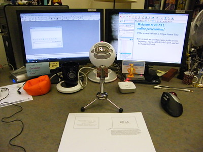

- Time Required
- 4–5 hours, including reading time
Welcome to Week Seven of the course. This week we begin work on your oral presentation, which takes the form of a long elevator pitch. You will submit your presentation as a video recording with voiceover. This week you will prepare for your presentation by learning about pitch presentations and designing presentations.
Holidays & Events This Week
In addition to being the middle of the term, this week also includes important religious holidays:
- Yom Kippur, the holiest of Jewish holidays, is celebrated on Tuesday and Wednesday.
- Navaratri, a significant Hindu festival, ends on Wednesday. Navaratri lasts from September 26 to October 5 this year.
- Sukkot, a week-long Jewish holiday, begins on Sunday the 9th.
- Mawlid, the Birthday of the Prophet, takes place October 7–8.
Because of these holidays (as well as Fall Break on Friday), the work load for this week is lighter:
- No Try-Its this week.
- Reading and videos to watch instead.
- A check-in this week, as usual, so I can gauge how everyone is doing now that we have reached midterm.
That is all. We will gear back up next week. I will prioritize the work as I link to it below so that you know what to work on first.
Objectives for this Module
After completing this week’s activities, you address the following course objectives:
- Analyze the rhetorical situation and determine the appropriate audience or users of written communication, considering the needs of global audiences and people with disabilities. [CLO 1]
- Use conventions of various workplace genres, such as proposals, instructions, correspondence, reports, and slide decks, with understanding of how the genre conventions can be used as heuristics and as principles of arrangement. [CLO 4]
- Collaborate with classmates in planning, researching, writing, revising, and presenting information. [CLO 5]
Activities to Complete
Due Dates
- Thursday, October 6: Suggested due date for your Check-In Survey.
- Friday, October 14: Suggested due date for the rest of this week’s work
- Grace Period:
- Ends at 11:59 PM on Wednesday, October 12 for your Check-in Survey.
- Ends at 11:59 PM on Friday, December 2 for the rest of the week’s work.
📚 To Read This Week
I've listed these readings in order of highest priority (#1) to lower priority (#7). Prioritize 1–4 this week. Get to the others if you have time.
- Recommendation Report Topic Overview
- What Is a Pitch?
- The Elevator Pitch (video, 3m 32s)
- Designing a Presentation (Video Assignment, 56m)
- Markel & Selber, Chapter 20, “Making Oral Presentations”
- Pitch Criteria
- Tip Sheet: Pitch
📝 To Write This Week
- Begin planning your Pitch Assignment, using the resources linked above in the Reading section:
- Decide on possible topics for your Recommendation Topic. You will propose your topic in your presentation.
- Watch the videos on pitches and presentations.
💬 To Discuss This Week
- Check in with your Accountability Group, according to the agreement that you have made. Use whatever tool your group has agreed to.
- Post any questions you have in the General Q&A Discussion Board in Canvas. If you have a private question, send me an email at tengrrl@vt.edu.
📓 To Check-In This Week
Photo credit: Online presentation setup by Michael Sauers on Flickr, used under a CC-BY-NC 2.0 license.